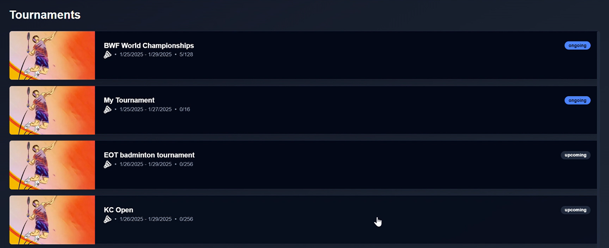
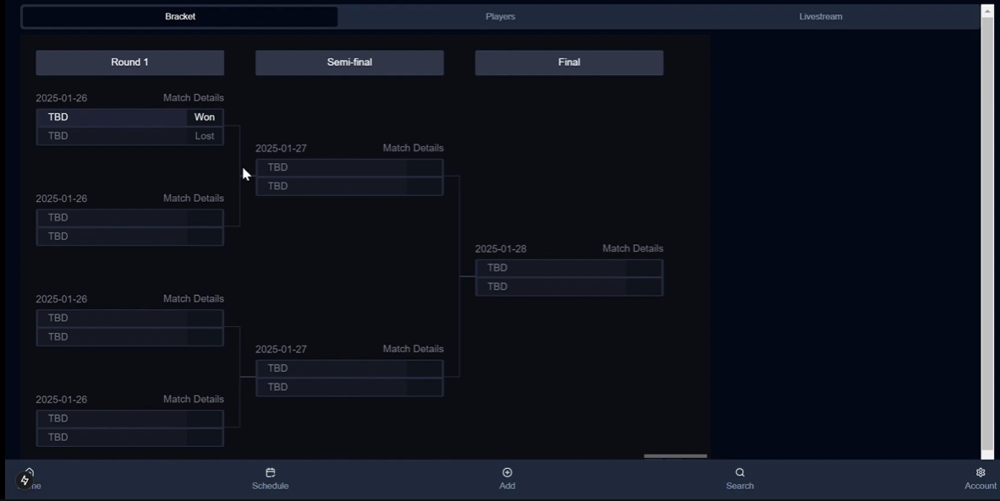

Tourni


tourni is a tournament management platform designed to streamline event organization with quick bracket setup, live streaming, and a unique card-collection system to celebrate player achievements. Built for GeeseHacks, it allows organizers to create 64-team double-elimination brackets in under a minute while integrating WebRTC for seamless live streaming. With a modern, user-friendly React and Next.js interface, PostgreSQL-backed data management, and AWS RDS for scalability, tourni enhances competition and accessibility. Winner of Best Use of Cloud and AWS, it aims to expand into more tournament types and student-led events.
PostgreSQL
AWS RDS
AWS VPC
WebRTC
Next.js
Typescript
NextAuth
Prisma